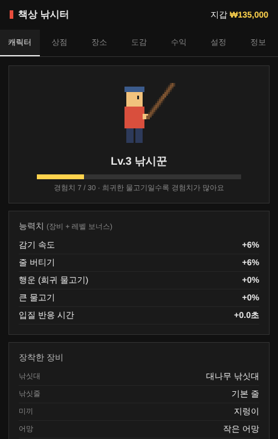
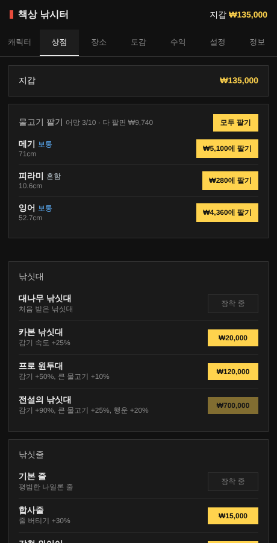
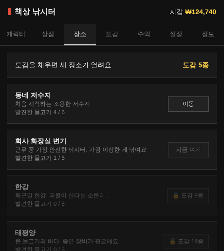

일하는 척하면서,
화면 구석에서 낚시하기
엑셀을 켜 둔 채로 Ctrl 하나만 눌러서 낚시해요. 잡은 물고기를 팔아 장비를 사고, 도감을 채워 새 낚시터를 열어 보세요.
Windows용 다운로드이런 게임이에요
작게, 조용히, 오래 즐기는 낚시
Ctrl 하나로 낚시다른 창을 쓰는 중에도 키가 먹혀요. 입력을 가로채지 않아서 엑셀에는 그대로 Ctrl이 들어가요.
잡고, 팔고, 장비 사기잡은 물고기는 어망에 담겨요. 상점에서 팔아 낚싯대·낚싯줄·미끼·어망을 사면 캐릭터가 강해져요.
도감과 4곳의 낚시터동네 저수지, 회사 화장실 변기, 한강, 태평양. 도감을 채울수록 새 장소가 열려요.
21종의 물고기흔함부터 전설까지. 멀리 던질수록, 행운이 높을수록 희귀한 녀석이 물어요.
크기·선명도 조절낚시터를 크게 키우거나, 옆자리에서 잘 안 보이게 흐릿하게 만들 수 있어요.
자동 업데이트새 버전이 나오면 알아서 받아 둬요. 낚시터의 ⬆ 버튼만 누르면 끝.
하는 법
설정에서 키를 오른쪽 Ctrl, 오른쪽 Shift 등으로 바꿀 수 있어요
- 던지기 — 키를 꾹 누르면 힘 게이지가 움직여요. 떼는 순간 그 거리로 던져요. 멀리 던질수록 희귀한 물고기가 나오지만 오래 기다려요.
- 입질 — 찌 위에 ! 가 뜨면 바로 눌러요. 빠를수록 PERFECT, 값이 1.3배.
- 힘겨루기 — 꾹 = 감기, 떼기 = 풀기. 오른쪽 장력 막대가 빨개지면 손을 떼요. 너무 오래 풀면 도망가요.
- 피니시 — 움직이는 커서가 초록 칸에 올 때 눌러요. 희귀할수록 여러 번 맞춰야 해요.
- 팔기 — 어망이 차면 ☰ 메뉴 → 상점에서 팔아요. 번 돈으로 더 좋은 장비를!
둘러보기
낚시터의 ☰ 버튼을 누르면 열리는 메뉴



설치 안내
설치 파일을 실행하면 설치 화면 없이 바로 깔리고, 화면 오른쪽 아래에 낚시터가 떠요
"Windows의 PC 보호" 파란 창이 떠요개인이 만든 프로그램이라 처음에 떠요. 추가 정보 → 실행을 누르면 돼요.
V3 등 백신이 검사하거나 막아요다른 창을 쓰는 중에도 키를 감지하는 기능 때문에 백신이 확인하는 경우가 있어요. 검사가 끝날 때까지 1~2분 기다린 뒤 설치 파일을 한 번만 다시 실행하세요. 계속 막히면 백신의 검사 예외 설정에 설치 파일과
%LOCALAPPDATA%\Programs\DeskFishing 폴더를 추가하고, 격리소에 있으면 복원하세요.브라우저가 다운로드를 막아요다운로드 목록에서 파일 옆 ⋯ → 유지(계속)를 누르세요.
설치했는데 안 보여요작업 표시줄에는 나오지 않아요. 화면 오른쪽 아래 구석을 확인하거나, 시작 메뉴에서 DeskFishing을 검색해 실행하세요.
한 마리 낚으러 가볼까요?
돈·도감·장비는 내 PC에 저장되고, 업데이트해도 그대로 남아요
Windows용 다운로드